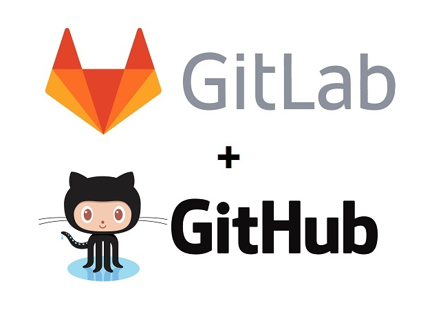
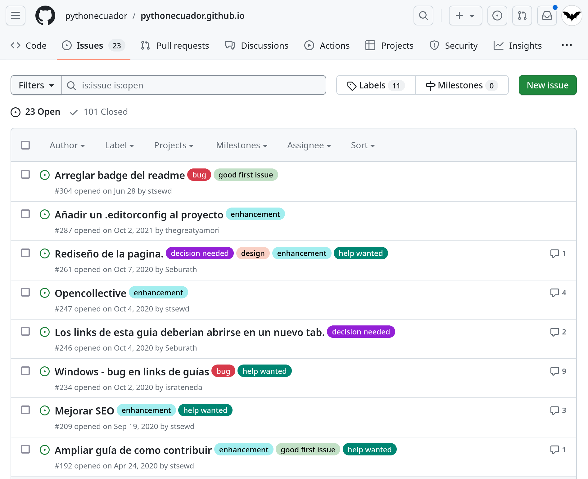
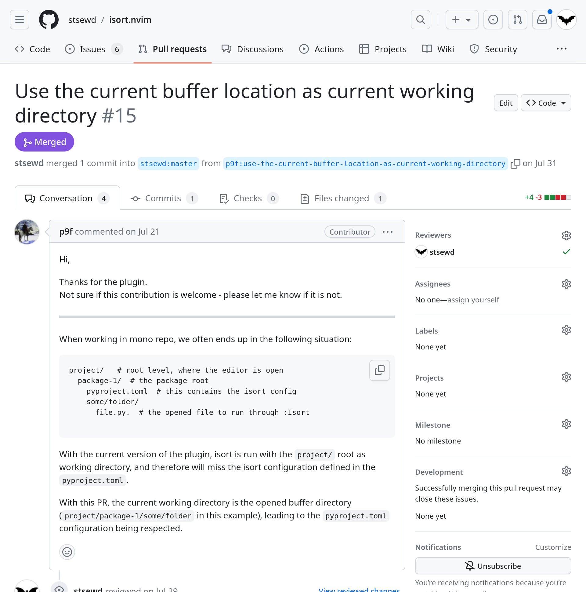

¿Te imaginas un mundo donde personas de
todos los rincones se junten para hacer
grandes cosas para el beneficio de todos
sin esperar nada a cambio
Es una utopía
No funciona en la vida real
Etc.
¡Buenas noticias! Si existe, y se lleva haciendo a gran
escala desde hace mucho tiempo: Software Libre.
¿Qué es FLOSS?
Free Libre Open Source Software
Es un software que es distribiudo de tal manera que el usuario
tenga la libertad de usarlo para cualquier
propósito, estudiarlo, cambiarlo y re-distribuirlo.
Clarificar que sobre los terminos Open Source/Free Software
y el titulo de la charla.
Libertad de usar el programa para cualquier propósito.
Libertad de estudiar el funcionamiento del programa y modificarlo.
Libertad de re-distribuir copias.
Libertad de mejorar el programa y compartirlo al público.
Las 4 libertades corresponden al software libre, en open source existen
10 premisas, pero estas engloban las 4 libertades.
“
No es una cuestión de dinero, sino de libertad .
”
Malentendidos
No se gana dinero
Se puede cobrar lo que sea por distribuir software libre, este
no deja de ser libre por ello.
Además existen varios modelos de negocios basados en FLOSS.
Yo trabajo en una compañía donde me pagan por hacer open source (Read the Docs).
GitHub lo ha hecho más fácil de monetizar tu trabajo en open source.
GitHub sponsors, hace unas semanas ya está disponible en Ecuador.
Pierdo mi autoría
El software libre es distribuido bajo una licencia, con el
fin de mantener las libertades.
El nombre del autor es usualmente incluido en el software.
Y esta debe ser incluida en cualquier modificación.
El software libre no es de buena calidad, el privativo es mejor
Depende de varios factores, pero en general ¿Es mejor algo
hecho por un par de expertos o por expertos de todo el
mundo?
Es difícil de usar
Aveces parece serlo, debido a que los grandes monopolios ponen
trabas al software libre (es difícil colaborar con otros que no
quieren colaborar).
Beneficios de FLOSS
Empresas privadas
Menor costo de desarrollo.
Software de calidad.
Atrae a muy buenos desarrolladores.
Estándares abiertos.
Tu software puede ser probado por muchos usuarios.
La comunidad se enfoca en traer desarrollar lo que realmente
necesitan y de la mejor manera posible.
Es más fácil que funcione en conjunto con otros productos/sistemas.
Educación
Reducción de costos.
Conocimiento abierto para todos.
Enseña a los estudiantes a ser buenos miembros de la comunidad.
No a la piratería.
Sin restricciones de uso.
Promuevenm normas de respeto mutuo (códigos de conducta)
Wikipedia es un buen ejemplo.
Personal
Aprender y compartir a través de la colaboración.
Participar en una comunidad que comparte tus mismos intereses.
Darte a cononer a nivel mundial.
Privacidad y seguridad.
Explorando un proyecto FLOSS
Ya vimos que es FLOSS, ahora vamos a entrar un poco más en detalle
sobre cómo luce un proyecto FLOSS, de donde nacen, como se organizan,
etc.
Hosting

Probablemente su primer acercamiento a un proyecto FLOSS habrá sido a través de estas plataformas.
Estas plataformas nos permiten alojar nuestro proyecto en Internet,
permitiendo que otras personas puedan acceder a él.
GitHub o GitLab son las opciones más populares, pero no son las únicas.
Incluyen soporte para issues y pull requests,
y muchas otras cosas más que nos ayudarán a mantener nuestro proyecto,
e interactuar con otros usuarios de una manera más sencilla.
Antes el código era compartido a través de listas de correo,
pero ahora es más común que se haga a través de estas plataformas.
Documentación
README.md
docs/
Probablemente lo primero que veremos al entrar a un proyecto,
es su README.
Este archivo nos dará una idea de lo que hace el proyecto,
links de interés, como instalarlo, como contribuir, etc.
Un proyecto pueda que tenga un simple README,
o si es un proyecto más grande, puede que tenga una documentación más extensa.
La cual la podrán leer desde la web, o offline como un man page.
El .md es una extensión de Markdown, un lenguaje de marcado
en texto plano, que nos permite darle formato a nuestro texto
de manera sencilla. Es un formato muy popular en la web,
GitHub y GitLab soportan este formato.
Existen otros como reStructuredText o Asciidoc.
Licencia
Reglas y acuerdos que las personas que usen, modifiquen, y distribuyan tu proyecto deben seguir.
LICENSE
Licencia, es un documento muy importante,
es el fundamento de un proyecto FLOSS.
Usualmente se encuentra en un archivo llamado LICENSE.
GPL, AGPL, LGPL
MIT
Apache
Creative Commons
La licencia que tenga el proyecto va a depender de los objetivos y las necesidades del proyecto.
Unas opciones populares son la familia de las licencias GPL,
o una licencia más permisiva como MIT o Apache.
Y hasta pueden encontrarse con licencias Creative Commons
para proyectos que no sean código.
Issues

Los issues son una herramienta muy útil para mantener un proyecto.
Nos permiten llevar un registro de las tareas que se deben hacer,
y de los errores que se encuentren, discutir posibles mejoras,
soluciones a problemas.
GitHub y GitLab tienen una pestaña dedicada a issues.
Otros proyectos pueden que usen otra plataforma para manejar sus issues.
Los issues son públicos,
usualmente cualquier persona puede abrir un issue,
o comentar en uno existente.
Alguien aquí ha creado un issue o comentado en uno de un proyecto FLOSS?
Cuando creen un issue, traten de ser lo más específicos posibles,
y si es posible, incluyan un ejemplo de como reproducir el problema.
Ayuda mucho a no hacer perder el tiempo a los mantenedores del proyecto.
Cuando un problema es resuelto, usualmente se cierra el issue.
Pull Requests
https://github.com/stsewd/isort.nvim/pull/15

Los pull requests son una herramienta muy útil para colaborar con un proyecto.
Nos permiten enviar cambios al proyecto, y que los mantenedores del proyecto
puedan revisarlos, y aceptarlos o rechazarlos.
GitHub y GitLab tienen una pestaña dedicada a pull requests.
Otros proyectos pueden que usen otra plataforma para manejar sus pull requests,
incluso usar email para intercambiar parches.
Los pull requests son públicos,
usualmente cualquier persona puede abrir un pull request,
o comentar en uno existente.
Un pull request va a pasar por varias etapas,
desde que se abre, hasta que es aceptado o rechazado.
Usualmente un maintainer del proyecto va a revisar el pull request,
hacer sugerencias, y pedir cambios, y eventualmente aceptarlo o rechazarlo.
Alguien aquí ha creado un pull request o comentado o revisado uno de un proyecto FLOSS?
Maintainers
Responder preguntas
Solucionar problemas
Tomar decisiones
Code review
Aceptar pull requests
Estas son las tareas principales de un maintainer.
Puede consumir mucho tiempo, y puede llegar a ser frustrante.
La mayoría de los proyectos FLOSS son mantenidos por voluntarios.
No están obligados a hacer nada de esto
Responder preguntas
Solucionar problemas
Tomar decisiones
Code review
Aceptar pull requests
Recuerda, los maintainers son personas, y no tienen la obligación
de hacer nada de esto.
Simpre que interactues en un proyecto,
trata de hacerle la vida más fácil a los maintainers.
Lee la documentación, lee issues y pull requests anteriores.
Código de Conducta
Reglas que los usuarios deben seguir
cuando interactúan con el proyecto o contribuyen a él.
CODE_OF_CONDUCT.md
Hemos visto varias maneras de interactuar con un proyecto,
issues, pull requests. Existen otras maneras de interactuar con un proyecto,
como un canal dedicado como un chat, o un foro.
Siempre que interactues con un proyecto,
asegurate de seguir su código de conducta.
Básicamente se amable y respetuoso con los demás.
Es muy fácil olvidar que del otro lado hay una persona.
Contribuyendo a un proyecto FLOSS
Tiempo o dinero
CONTRIBUTING.md
Hay muchas maneras de contribuir a un proyecto FLOSS,
y no todas requieren de conocimientos técnicos.
Puedes contribuir con tu tiempo, o con dinero.
Si tu compañía usa un proyecto FLOSS,
puedes convencerlos de que donen dinero al proyecto.
O que te permitan contribuir al proyecto durante tu horario de trabajo.
Reportando errores
Sugiriendo mejoras
Escribiendo código
Respondiendo preguntas
Haciendo reviews
Documentación y traducciones
Donaciones
Realmente empezando a contribuir a un proyecto FLOSS
Lo que necesitas
Ganas y tiempo
Una cuenta en GitHub/GitLab
Git
Un editor de código
Para empezar, lo único que necesitas es ganas de aprender y tiempo.
Lo demás es opcional.
Elije un proyecto
Escoge un proyecto que uses, o que te interese.
Si es un proyecto que está activo, mejor.
Familiarizate con el proyecto
README.md
CONTRIBUTING.md
CODE_OF_CONDUCT.md
Mientras te familiarizas con el proyecto,
observa si existen cosas que puedas mejorar.
Un error tipográfico, un link roto,
un ejemplo que no funciona, algo que no está claro.
Ahí ya tienes tu primera contribución!
Observa el proyecto
Subscribete a todas las notificaciones del proyecto.
Lee cada nuevo issue y pull request.
No necesitas responder a los issue o pull request,
no necesitas entenderlos.
Simplemente leelos.
Te ayudarán a familiarizarte con el proyecto,
y luego de un tiempo, empezarás a entenderlos.
Hasta puede que te animes a comentar en alguno.
Simplemente hazlo
Busca issues que puedas resolver,
y envía un pull request.
Hemos visto varias maneras pasivas para empezar a contribuir a un proyecto.
Pero si te sientes más animado, puedes ser un poco más proactivo
y buscar issues que puedas resolver.
Busca issues que tengan la etiqueta "good first issue".
Mi experiencia
Muchos proyectos FLOSS están alojados en GitHub.
No tengo idea qué estoy haciendo.
No tenía idea por donde empezar.
¿Qué debo aprender?
¿A quién debo preguntar?
Ni siquiera sabía programar del todo.
Mi primer pull request (2016)
Lo hice mal, aún no lo aceptan.
Subir proyectos de la U.
Subir proyectos personales.
Observar otros proyectos.
Colaborar de vez en cuando con traducciones.
¡He aprendido un montón!
He aprendido nuevas tecnologías
He conocido nuevas personas
He compartido con la comunidad
He conseguido un trabajo
¡Tú también puedes hacerlo!
Empezar a colaborar puede ser aterrador (aún lo es para mi).
Aprovecha este hacktoberfest para hacer muchas preguntas.
FLOSS fuera de la pantalla
...o la razón por la que están en este evento sin haber pagado un centavo.
Para mi FLOSS también se trata de compartir el conocimiento con la
comunidad, aprender entre todos. Darles a conocer a las personas
esa libertad.
Ni siquiera hace falta que sepas programar.
Referencias y recursos adicionales
Preguntas o preguntar si alguien ha contribuido antes
(no importa si fue una contribución muy pequeña).
Que nos cuente su experiencia.